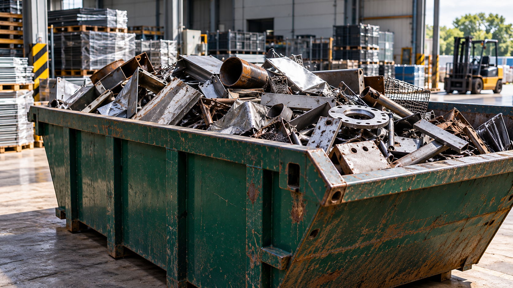
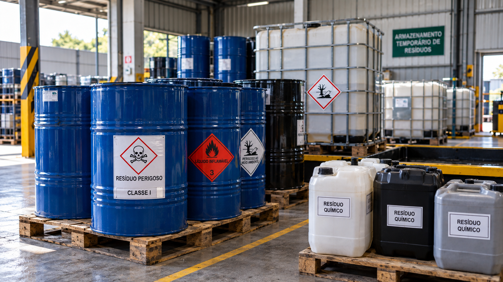
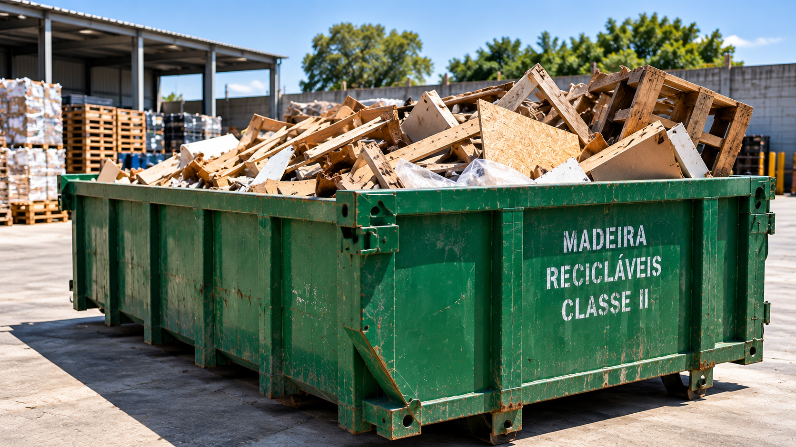
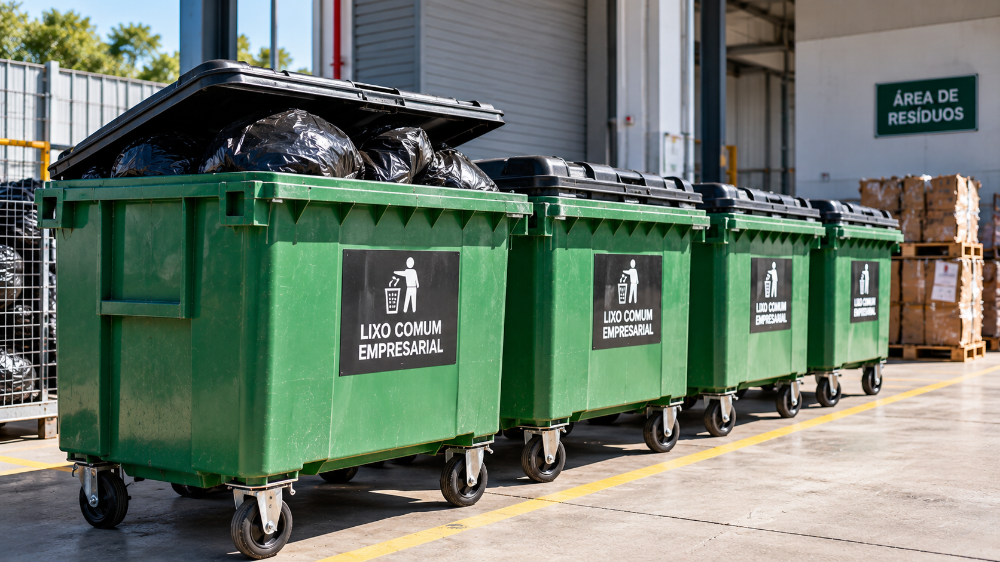
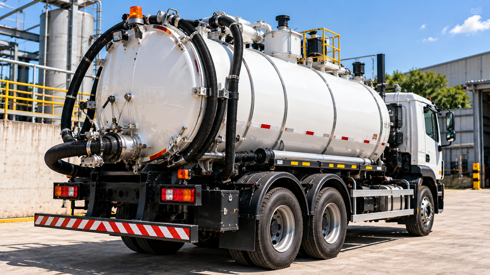
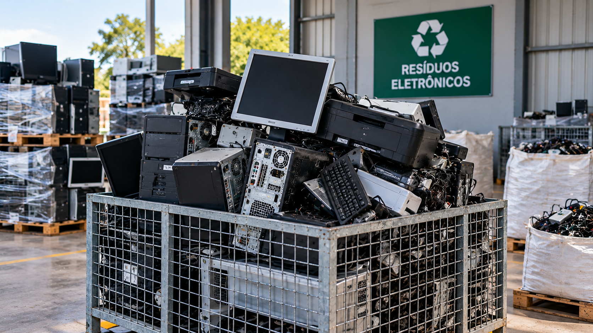

Gerenciamento de resíduos para empresas
Da necessidade à destinação, estruturamos soluções ambientais adequadas para cada operação.
A Apoio Sustentabilidade conecta planejamento, logística, soluções operacionais, parceiros especializados e acompanhamento documental para atender diferentes demandas empresariais.
Conte sobre a sua necessidade
Não sabe exatamente qual serviço precisa? Descreva a demanda e ajudamos a estruturar a solução.
Soluções completas em gestão de resíduos
Encontre a solução mais próxima da necessidade da sua empresa.

Resíduos IndustriaisResíduos Industriais
Gerenciamento de resíduos gerados em processos industriais e operações empresariais.
Conhecer solução →
Classe IResíduos Classe I
Soluções para resíduos perigosos que exigem cuidados específicos de gerenciamento.
Conhecer solução →
Classe IIResíduos Classe II
Alternativas para resíduos não perigosos, recicláveis ou destinados adequadamente.
Conhecer solução →
Coleta ProgramadaLixo Comum Empresarial
Coletas programadas de acordo com volume, frequência e características da operação.
Conhecer solução →
Resíduos LíquidosResíduos Líquidos
Soluções para efluentes, emulsões, lodos e outros resíduos líquidos.
Conhecer solução →
EletrônicosResíduos Eletrônicos
Coleta e direcionamento de equipamentos eletroeletrônicos obsoletos.
Solicitar avaliação →Equipamentos e soluções para diferentes demandas
A configuração é definida conforme o tipo de resíduo, volume, frequência e características da operação.
Mais do que coletar resíduos: estruturamos soluções
Cada empresa possui uma realidade diferente. Por isso, nosso trabalho começa entendendo a necessidade da operação.
Estruturamos soluções envolvendo coleta, transporte, tratamento, destinação, limpeza ambiental e acompanhamento documental.
Falar sobre minha operaçãoDa necessidade à solução
Um processo estruturado para facilitar a gestão ambiental da sua empresa.
Entendemos a demanda
Tipo de resíduo, quantidade, frequência, local e características da operação.
Estruturamos a solução
Logística, equipamentos, tratamento e alternativas de destinação.
Coordenamos o atendimento
Organização das soluções e parceiros necessários à operação.
Acompanhamos o processo
Suporte operacional, comunicação e acompanhamento documental.
Resíduos também podem representar oportunidades
Quando houver viabilidade, avaliamos oportunidades de valorização, reaproveitamento, reciclagem ou recuperação dos materiais.
Avaliar meu resíduo- Reciclagem
- Reaproveitamento
- Recuperação
- Valorização de materiais
- Tratamentos alternativos
- Destinação ambientalmente adequada
Organização documental para sua operação
O gerenciamento de resíduos também envolve documentos e informações relacionados à movimentação e destinação.
Atendimento empresarial em São Paulo e região
Consulte nossa equipe para verificar a disponibilidade de atendimento para sua operação.
Consultar atendimentoVamos entender sua necessidade?
Informe o resíduo, quantidade, cidade e características da sua operação.